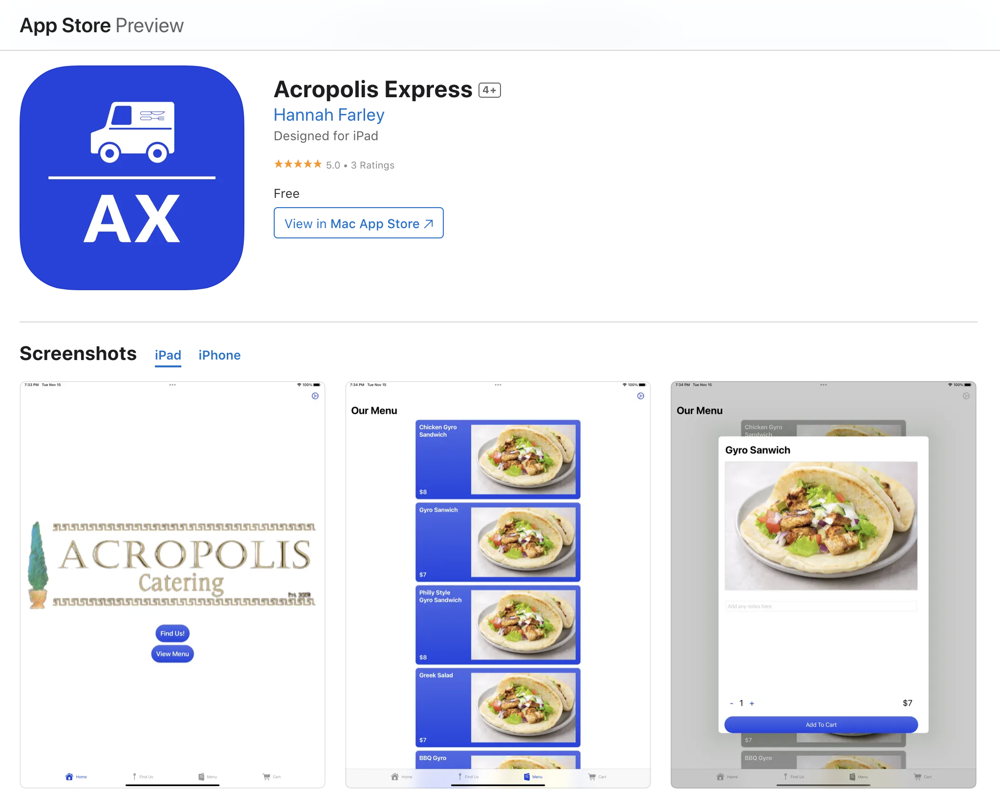

During my time as a computer science student at Vanderbilt University, I had the opportunity to work with three other students to develop a website called RateMyClass. This website was designed to help Vanderbilt students make informed decisions about the courses they take by providing them with access to reviews of courses and professors.
We built the website using a variety of technologies, including JavaScript, Node.js, and Firebase as our database. These tools allowed us to create a user-friendly and efficient website that was easy to navigate and provided students with the information they needed to make informed decisions about their academic careers.
One of the key features of RateMyClass is the ability for students to review Vanderbilt classes and provide feedback on their experiences. By allowing students to share their opinions and experiences, we have created a valuable resource for the Vanderbilt community that can help students make informed decisions about their academic paths.
In addition to providing students with access to course reviews, RateMyClass also allows students to review other students' reviews of classes. This feature enables students to evaluate the quality of the reviews and make more informed decisions about which courses to take.
Overall, I am extremely proud of my work on RateMyClass and believe that this project has helped me to develop a deep understanding of web development and the importance of providing users with a high-quality user experience. I look forward to continuing to work on projects that can have a positive impact on the world and help to make people's lives easier and more enjoyable.

During my time as a computer science student at Vanderbilt University, I had the opportunity to work with three other students to develop an iOS application for a local food truck called Acropolis Express. Our goal was to create a user-friendly app that would allow customers to order and pay for their food through their mobile devices, as well as providing them with important information about the food truck's hours and location.
We built the app using a variety of technologies, including Swift, SwiftUI, Xcode and FireBase. These tools allowed us to create a responsive and efficient app that was easy to navigate and provided users with the information they needed to make informed decisions about their food choices.
One of the key features of the Acropolis Express app is the ability for customers to view the menu and order their food directly through the app. This feature has proven to be extremely popular among Acropolis Express customers, who appreciate the convenience and ease of use that the app provides.
In addition to providing customers with a streamlined ordering process, the app also enables employees of the food truck to view and manage orders, as well as update important information about the truck's hours, location, and menu data. This feature has helped to make the food truck's operations more efficient and streamlined, while also providing customers with a better overall experience.
Overall, I am extremely proud of my work on the Acropolis Express app and believe that this project has helped me to develop a deep understanding of mobile app development and the importance of creating user-friendly interfaces. I look forward to continuing to work on projects that can help to make people's lives easier and more enjoyable.